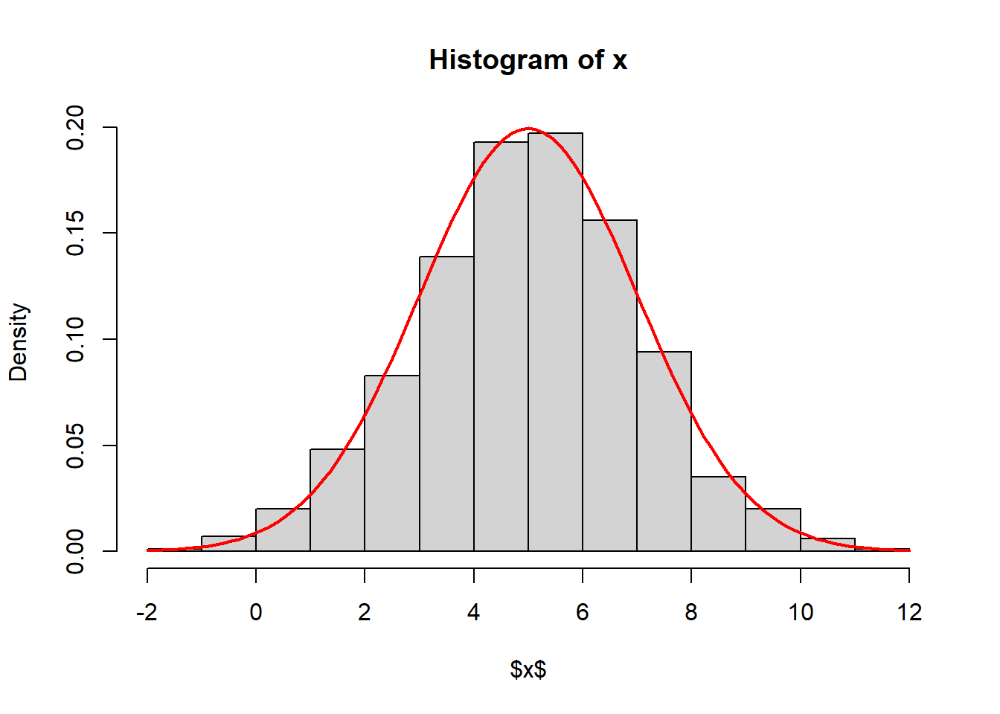
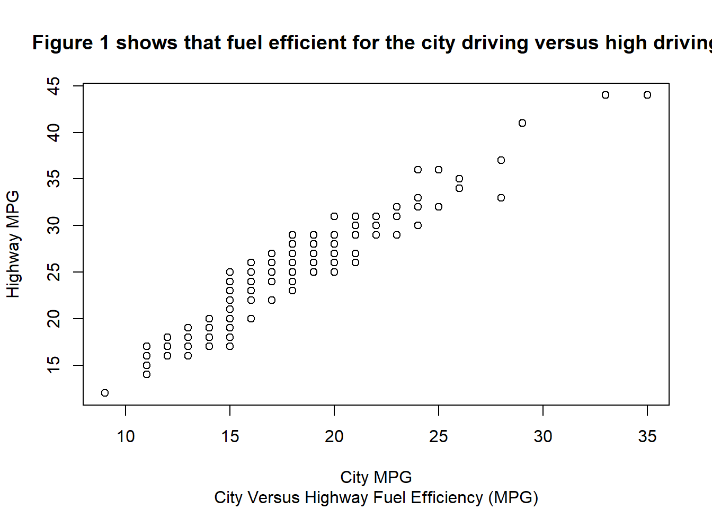

n = 1000Assignment_1
#2
(a)
\[
E(Y) = y_1p_1+...+y_k+p_k = \sum_{i=1}^ky_ip_i
\]
(b)
\[
\sigma_Y = Var(Y) = E[(Y-\mu_y)^2]=\int_{i=1}^k(y_i-\mu_y)^2p_i
\]
(c)
\[
\bar{\beta} = \frac{\int_{i=1}^n(y-y_i)(x-x_i)}{\int_{i+1}^n(x-x)^2}
\]
(d)
\[
P(a\leq Y\leq b) = \int_a^bf_Y(y)dy
\]
(e)
\[
\hat{g}(x) = \frac{\frac{1}{nh}\int_{i=1}^ny_ik(\frac{x_i-x}{h})}{\frac{1}{nh}\int_{i=1}^nk(\frac{x_i-x}{h})}
\]
\[
z_1 = \sqrt{-2ln(\mu_1)} x cos(2\pi\mu_2)
\]
\[
z_2 = \sqrt{-2ln(\mu_1)} x sin(2\pi\mu_x)
\]
\[
z = [z_1,z_2]
\]
#3.1
mu_1 <- runif(n/2,0,1)
mu_2 <- runif(n/2,0,1)z_1 <- sqrt(-2*log(mu_1))*cos(2*pi*mu_2)
z_2 <- sqrt(-2*log(mu_1))*sin(2*pi*mu_2)z <- c(z_1,z_2)mu=5
sigma=2x = mu + sigma * zmean(x)[1] 5.025086sd(x)[1] 2.022845 hist(x,
freq= FALSE,
ylab= "Density",
xlab= "$x$")
curve(dnorm(x,mean= mu,sd= sigma),
col= "red", lwd= 2,add = TRUE)
#3.2 df <- data.frame(Table 1)
cihi <- read.csv("hlthexp.csv")
df <- data.frame(Year = cihi$Year,
Hospitals = cihi$Hospitals,
Physicians = cihi$Physicians,
"Other Services" = cihi$Other.Institutions,
Dental = cihi$Other.Professionals..Dental.Services,
Vision = cihi$Other.Professionals..Vision.Care.Services,
"Other Professionals" = cihi$Other.Professionals..Other.Services,
check.names = FALSE)- Determine if there are any missing values for the variable Hospitals No missing values number of observations is 48 each has a value
df$Hospitals [1] 5136.77 5977.68 6372.73 6861.92 7487.62 8585.16 10127.35 12001.93
[9] 13174.55 13936.30 14737.75 15937.05 17154.21 18497.17 20268.98 20528.15
[17] 21783.23 22652.40 22619.06 22096.82 21849.46 21997.29 22307.52 23530.41
[25] 24751.97 26950.76 28606.54 30683.55 32903.18 35269.82 37112.35 39704.71
[33] 42376.77 45362.04 47996.52 50947.81 52126.35 53299.96 54954.28 56123.22
[41] 57352.33 58168.97 60356.12 62896.86 65034.33 67221.53 69663.71 73778.17df$total_other_services <- df$Dental+ df$Vision + df$"Other Professionals"cihi <- data.frame(cihi, "Perscription.Drugs" = "Prescribed.Drugs")(e) Using a single R command, determine the expenditure on hospitals in 1983.
Expenditure_1983 <- cihi["9", "Hospitals"]
#df$Hospitals[df$Year:1983](f) Using a singe R command, list the expenditures by year for 2012-202
df$Hospitals [1] 5136.77 5977.68 6372.73 6861.92 7487.62 8585.16 10127.35 12001.93
[9] 13174.55 13936.30 14737.75 15937.05 17154.21 18497.17 20268.98 20528.15
[17] 21783.23 22652.40 22619.06 22096.82 21849.46 21997.29 22307.52 23530.41
[25] 24751.97 26950.76 28606.54 30683.55 32903.18 35269.82 37112.35 39704.71
[33] 42376.77 45362.04 47996.52 50947.81 52126.35 53299.96 54954.28 56123.22
[41] 57352.33 58168.97 60356.12 62896.86 65034.33 67221.53 69663.71 73778.17Expenditure_2012_2022 <- cihi["38-48", "Hospitals"]#3.3
mpg <- ggplot2::mpg
subset(mpg, year == 2008) manufacturer model displ year cyl trans drv cty hwy
3 audi a4 2.0 2008 4 manual(m6) f 20 31
4 audi a4 2.0 2008 4 auto(av) f 21 30
7 audi a4 3.1 2008 6 auto(av) f 18 27
10 audi a4 quattro 2.0 2008 4 manual(m6) 4 20 28
11 audi a4 quattro 2.0 2008 4 auto(s6) 4 19 27
14 audi a4 quattro 3.1 2008 6 auto(s6) 4 17 25
15 audi a4 quattro 3.1 2008 6 manual(m6) 4 15 25
17 audi a6 quattro 3.1 2008 6 auto(s6) 4 17 25
18 audi a6 quattro 4.2 2008 8 auto(s6) 4 16 23
19 chevrolet c1500 suburban 2wd 5.3 2008 8 auto(l4) r 14 20
20 chevrolet c1500 suburban 2wd 5.3 2008 8 auto(l4) r 11 15
21 chevrolet c1500 suburban 2wd 5.3 2008 8 auto(l4) r 14 20
23 chevrolet c1500 suburban 2wd 6.0 2008 8 auto(l4) r 12 17
26 chevrolet corvette 6.2 2008 8 manual(m6) r 16 26
27 chevrolet corvette 6.2 2008 8 auto(s6) r 15 25
28 chevrolet corvette 7.0 2008 8 manual(m6) r 15 24
29 chevrolet k1500 tahoe 4wd 5.3 2008 8 auto(l4) 4 14 19
30 chevrolet k1500 tahoe 4wd 5.3 2008 8 auto(l4) 4 11 14
34 chevrolet malibu 2.4 2008 4 auto(l4) f 22 30
36 chevrolet malibu 3.5 2008 6 auto(l4) f 18 29
37 chevrolet malibu 3.6 2008 6 auto(s6) f 17 26
42 dodge caravan 2wd 3.3 2008 6 auto(l4) f 17 24
43 dodge caravan 2wd 3.3 2008 6 auto(l4) f 17 24
44 dodge caravan 2wd 3.3 2008 6 auto(l4) f 11 17
47 dodge caravan 2wd 3.8 2008 6 auto(l6) f 16 23
48 dodge caravan 2wd 4.0 2008 6 auto(l6) f 16 23
49 dodge dakota pickup 4wd 3.7 2008 6 manual(m6) 4 15 19
50 dodge dakota pickup 4wd 3.7 2008 6 auto(l4) 4 14 18
53 dodge dakota pickup 4wd 4.7 2008 8 auto(l5) 4 14 19
54 dodge dakota pickup 4wd 4.7 2008 8 auto(l5) 4 14 19
55 dodge dakota pickup 4wd 4.7 2008 8 auto(l5) 4 9 12
59 dodge durango 4wd 4.7 2008 8 auto(l5) 4 13 17
60 dodge durango 4wd 4.7 2008 8 auto(l5) 4 9 12
61 dodge durango 4wd 4.7 2008 8 auto(l5) 4 13 17
63 dodge durango 4wd 5.7 2008 8 auto(l5) 4 13 18
65 dodge ram 1500 pickup 4wd 4.7 2008 8 manual(m6) 4 12 16
66 dodge ram 1500 pickup 4wd 4.7 2008 8 auto(l5) 4 9 12
67 dodge ram 1500 pickup 4wd 4.7 2008 8 auto(l5) 4 13 17
68 dodge ram 1500 pickup 4wd 4.7 2008 8 auto(l5) 4 13 17
69 dodge ram 1500 pickup 4wd 4.7 2008 8 manual(m6) 4 12 16
70 dodge ram 1500 pickup 4wd 4.7 2008 8 manual(m6) 4 9 12
73 dodge ram 1500 pickup 4wd 5.7 2008 8 auto(l5) 4 13 17
77 ford expedition 2wd 5.4 2008 8 auto(l6) r 12 18
81 ford explorer 4wd 4.0 2008 6 auto(l5) 4 13 19
82 ford explorer 4wd 4.6 2008 8 auto(l6) 4 13 19
88 ford f150 pickup 4wd 4.6 2008 8 auto(l4) 4 13 17
90 ford f150 pickup 4wd 5.4 2008 8 auto(l4) 4 13 17
93 ford mustang 4.0 2008 6 manual(m5) r 17 26
94 ford mustang 4.0 2008 6 auto(l5) r 16 24
97 ford mustang 4.6 2008 8 manual(m5) r 15 23
98 ford mustang 4.6 2008 8 auto(l5) r 15 22
99 ford mustang 5.4 2008 8 manual(m6) r 14 20
105 honda civic 1.8 2008 4 manual(m5) f 26 34
106 honda civic 1.8 2008 4 auto(l5) f 25 36
107 honda civic 1.8 2008 4 auto(l5) f 24 36
108 honda civic 2.0 2008 4 manual(m6) f 21 29
111 hyundai sonata 2.4 2008 4 auto(l4) f 21 30
112 hyundai sonata 2.4 2008 4 manual(m5) f 21 31
115 hyundai sonata 3.3 2008 6 auto(l5) f 19 28
118 hyundai tiburon 2.0 2008 4 manual(m5) f 20 28
119 hyundai tiburon 2.0 2008 4 auto(l4) f 20 27
120 hyundai tiburon 2.7 2008 6 auto(l4) f 17 24
121 hyundai tiburon 2.7 2008 6 manual(m6) f 16 24
122 hyundai tiburon 2.7 2008 6 manual(m5) f 17 24
123 jeep grand cherokee 4wd 3.0 2008 6 auto(l5) 4 17 22
124 jeep grand cherokee 4wd 3.7 2008 6 auto(l5) 4 15 19
127 jeep grand cherokee 4wd 4.7 2008 8 auto(l5) 4 9 12
128 jeep grand cherokee 4wd 4.7 2008 8 auto(l5) 4 14 19
129 jeep grand cherokee 4wd 5.7 2008 8 auto(l5) 4 13 18
130 jeep grand cherokee 4wd 6.1 2008 8 auto(l5) 4 11 14
132 land rover range rover 4.2 2008 8 auto(s6) 4 12 18
133 land rover range rover 4.4 2008 8 auto(s6) 4 12 18
137 lincoln navigator 2wd 5.4 2008 8 auto(l6) r 12 18
139 mercury mountaineer 4wd 4.0 2008 6 auto(l5) 4 13 19
140 mercury mountaineer 4wd 4.6 2008 8 auto(l6) 4 13 19
144 nissan altima 2.5 2008 4 auto(av) f 23 31
145 nissan altima 2.5 2008 4 manual(m6) f 23 32
146 nissan altima 3.5 2008 6 manual(m6) f 19 27
147 nissan altima 3.5 2008 6 auto(av) f 19 26
150 nissan maxima 3.5 2008 6 auto(av) f 19 25
153 nissan pathfinder 4wd 4.0 2008 6 auto(l5) 4 14 20
154 nissan pathfinder 4wd 5.6 2008 8 auto(s5) 4 12 18
158 pontiac grand prix 3.8 2008 6 auto(l4) f 18 28
159 pontiac grand prix 5.3 2008 8 auto(s4) f 16 25
162 subaru forester awd 2.5 2008 4 manual(m5) 4 20 27
163 subaru forester awd 2.5 2008 4 manual(m5) 4 19 25
164 subaru forester awd 2.5 2008 4 auto(l4) 4 20 26
165 subaru forester awd 2.5 2008 4 auto(l4) 4 18 23
170 subaru impreza awd 2.5 2008 4 auto(s4) 4 20 25
171 subaru impreza awd 2.5 2008 4 auto(s4) 4 20 27
172 subaru impreza awd 2.5 2008 4 manual(m5) 4 19 25
173 subaru impreza awd 2.5 2008 4 manual(m5) 4 20 27
178 toyota 4runner 4wd 4.0 2008 6 auto(l5) 4 16 20
179 toyota 4runner 4wd 4.7 2008 8 auto(l5) 4 14 17
182 toyota camry 2.4 2008 4 manual(m5) f 21 31
183 toyota camry 2.4 2008 4 auto(l5) f 21 31
186 toyota camry 3.5 2008 6 auto(s6) f 19 28
189 toyota camry solara 2.4 2008 4 manual(m5) f 21 31
190 toyota camry solara 2.4 2008 4 auto(s5) f 22 31
193 toyota camry solara 3.3 2008 6 auto(s5) f 18 27
197 toyota corolla 1.8 2008 4 manual(m5) f 28 37
198 toyota corolla 1.8 2008 4 auto(l4) f 26 35
200 toyota land cruiser wagon 4wd 5.7 2008 8 auto(s6) 4 13 18
203 toyota toyota tacoma 4wd 2.7 2008 4 manual(m5) 4 17 22
206 toyota toyota tacoma 4wd 4.0 2008 6 manual(m6) 4 15 18
207 toyota toyota tacoma 4wd 4.0 2008 6 auto(l5) 4 16 20
210 volkswagen gti 2.0 2008 4 manual(m6) f 21 29
211 volkswagen gti 2.0 2008 4 auto(s6) f 22 29
216 volkswagen jetta 2.0 2008 4 auto(s6) f 22 29
217 volkswagen jetta 2.0 2008 4 manual(m6) f 21 29
218 volkswagen jetta 2.5 2008 5 auto(s6) f 21 29
219 volkswagen jetta 2.5 2008 5 manual(m5) f 21 29
226 volkswagen new beetle 2.5 2008 5 manual(m5) f 20 28
227 volkswagen new beetle 2.5 2008 5 auto(s6) f 20 29
230 volkswagen passat 2.0 2008 4 auto(s6) f 19 28
231 volkswagen passat 2.0 2008 4 manual(m6) f 21 29
234 volkswagen passat 3.6 2008 6 auto(s6) f 17 26
fl class
3 p compact
4 p compact
7 p compact
10 p compact
11 p compact
14 p compact
15 p compact
17 p midsize
18 p midsize
19 r suv
20 e suv
21 r suv
23 r suv
26 p 2seater
27 p 2seater
28 p 2seater
29 r suv
30 e suv
34 r midsize
36 r midsize
37 r midsize
42 r minivan
43 r minivan
44 e minivan
47 r minivan
48 r minivan
49 r pickup
50 r pickup
53 r pickup
54 r pickup
55 e pickup
59 r suv
60 e suv
61 r suv
63 r suv
65 r pickup
66 e pickup
67 r pickup
68 r pickup
69 r pickup
70 e pickup
73 r pickup
77 r suv
81 r suv
82 r suv
88 r pickup
90 r pickup
93 r subcompact
94 r subcompact
97 r subcompact
98 r subcompact
99 p subcompact
105 r subcompact
106 r subcompact
107 c subcompact
108 p subcompact
111 r midsize
112 r midsize
115 r midsize
118 r subcompact
119 r subcompact
120 r subcompact
121 r subcompact
122 r subcompact
123 d suv
124 r suv
127 e suv
128 r suv
129 r suv
130 p suv
132 r suv
133 r suv
137 r suv
139 r suv
140 r suv
144 r midsize
145 r midsize
146 p midsize
147 p midsize
150 p midsize
153 p suv
154 p suv
158 r midsize
159 p midsize
162 r suv
163 p suv
164 r suv
165 p suv
170 p compact
171 r compact
172 p compact
173 r compact
178 r suv
179 r suv
182 r midsize
183 r midsize
186 r midsize
189 r compact
190 r compact
193 r compact
197 r compact
198 r compact
200 r suv
203 r pickup
206 r pickup
207 r pickup
210 p compact
211 p compact
216 p compact
217 p compact
218 r compact
219 r compact
226 r subcompact
227 r subcompact
230 p midsize
231 p midsize
234 p midsizemin(mpg$cty)[1] 9max(mpg$cty)[1] 35n <- 11
avg_mpg = sum(mpg$cty)/n\[ Avg Mpg = \frac{sum_{i-1}^ncty_i}{n}\]
mean(mpg$cty)[1] 16.85897compact <- subset(mpg, class == "compact")
ifelse(compact == "compact", 1, 0) manufacturer model displ year cyl trans drv cty hwy fl class
1 0 0 0 0 0 0 0 0 0 0 1
2 0 0 0 0 0 0 0 0 0 0 1
3 0 0 0 0 0 0 0 0 0 0 1
4 0 0 0 0 0 0 0 0 0 0 1
5 0 0 0 0 0 0 0 0 0 0 1
6 0 0 0 0 0 0 0 0 0 0 1
7 0 0 0 0 0 0 0 0 0 0 1
8 0 0 0 0 0 0 0 0 0 0 1
9 0 0 0 0 0 0 0 0 0 0 1
10 0 0 0 0 0 0 0 0 0 0 1
11 0 0 0 0 0 0 0 0 0 0 1
12 0 0 0 0 0 0 0 0 0 0 1
13 0 0 0 0 0 0 0 0 0 0 1
14 0 0 0 0 0 0 0 0 0 0 1
15 0 0 0 0 0 0 0 0 0 0 1
142 0 0 0 0 0 0 0 0 0 0 1
143 0 0 0 0 0 0 0 0 0 0 1
170 0 0 0 0 0 0 0 0 0 0 1
171 0 0 0 0 0 0 0 0 0 0 1
172 0 0 0 0 0 0 0 0 0 0 1
173 0 0 0 0 0 0 0 0 0 0 1
187 0 0 0 0 0 0 0 0 0 0 1
188 0 0 0 0 0 0 0 0 0 0 1
189 0 0 0 0 0 0 0 0 0 0 1
190 0 0 0 0 0 0 0 0 0 0 1
191 0 0 0 0 0 0 0 0 0 0 1
192 0 0 0 0 0 0 0 0 0 0 1
193 0 0 0 0 0 0 0 0 0 0 1
194 0 0 0 0 0 0 0 0 0 0 1
195 0 0 0 0 0 0 0 0 0 0 1
196 0 0 0 0 0 0 0 0 0 0 1
197 0 0 0 0 0 0 0 0 0 0 1
198 0 0 0 0 0 0 0 0 0 0 1
208 0 0 0 0 0 0 0 0 0 0 1
209 0 0 0 0 0 0 0 0 0 0 1
210 0 0 0 0 0 0 0 0 0 0 1
211 0 0 0 0 0 0 0 0 0 0 1
212 0 0 0 0 0 0 0 0 0 0 1
213 0 0 0 0 0 0 0 0 0 0 1
214 0 0 0 0 0 0 0 0 0 0 1
215 0 0 0 0 0 0 0 0 0 0 1
216 0 0 0 0 0 0 0 0 0 0 1
217 0 0 0 0 0 0 0 0 0 0 1
218 0 0 0 0 0 0 0 0 0 0 1
219 0 0 0 0 0 0 0 0 0 0 1
220 0 0 0 0 0 0 0 0 0 0 1
221 0 0 0 0 0 0 0 0 0 0 1 #x <- c(-2, 0, 3)
#ifelse(x > 0, "Positive", "Not Positive")
#compact <- subset(mpg, class == "compact") - Estimate average miles per gallon within cit limits for compact cars
avg_mpg <- mean(compact$cty)- Create a Scatter Plot X-axis city mpg (cty) Y-axis highway mpg(hwy)
x <- mpg$cty
y <- mpg$hwy
plot(x, y, main="Figure 1 shows that fuel efficient for the city driving versus high driving", xlab="City MPG", ylab="Highway MPG", sub="City Versus Highway Fuel Efficiency (MPG)")